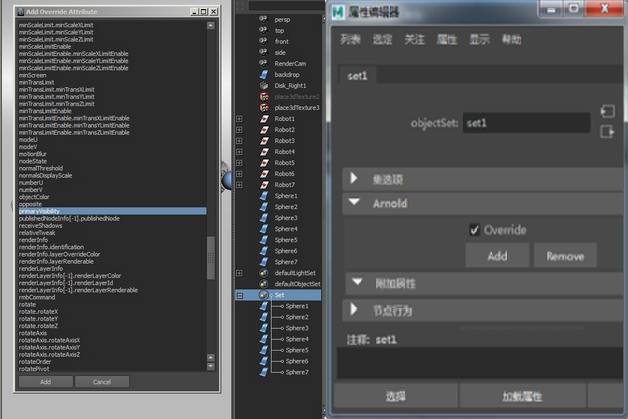
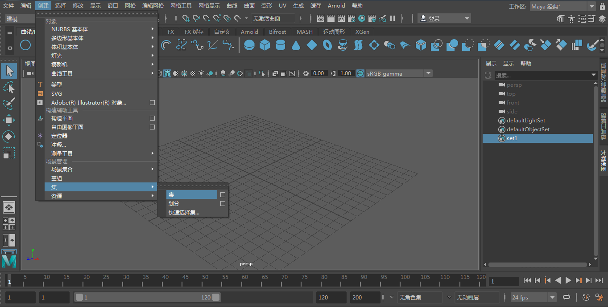
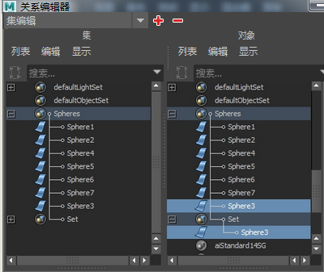

示例 1 - 嵌套组
在该场景中，所有蓝色球体都是可见的。如果我们想对摄影机隐藏它们的可见性，需要耗费大量时间分别更改每个球体的属性。一个较简单的方法是为球体创建覆盖集并覆盖该集的 _primary_visibility_。
为需要覆盖的对象创建一个集
- 在属性编辑器的 Arnold 部分中，您可以添加覆盖。选择“Ai 覆盖”(Ai Override)，然后单击“添加”(Add)。此时将显示一个包含属性列表的窗口。向下滚动至 _primary_visibility_，然后单击“添加”(Add)。

将 primary_visibility 覆盖添加到集
- 在属性编辑器中单击该集的“附加属性”(Extra Attributes)，此时应该可以看到 primary_visibility 已添加完毕。您在下方可以看到，更改集的 primary_visibility 属性将禁用所有球体的 _primary_visibility_。
球体的 primary_visibility 已禁用
嵌套集
也可以在场景内嵌套覆盖节点。这样可以执行更复杂的用户设置。例如，您可能希望启用或禁用覆盖集内的特定参数。
以下示例显示了如何才能在集内创建和嵌套其他集。
如先前的示例所示，为所有球体创建一个集并为该集添加 primary_visibility 覆盖。禁用 _primary_visibility_。
选择其中一个球体并为其创建另一个集：

- 打开“集关系编辑器”(Set Relationship Editor)窗口。选择“球体”(Spheres)集，然后在“对象”(Objects)窗口中选择新集。您应该会在大纲视图中看到创建的新连接：

在“球体”(Spheres)集内嵌套了集
- 启用新集的 primary_visibility_，然后重新渲染场景。您应该可以看到主集的 _primary_visibility 属性已关闭。但是，新集的 primary_visibility 应处于开启状态：
启用了 primary_visibility 的嵌套覆盖集